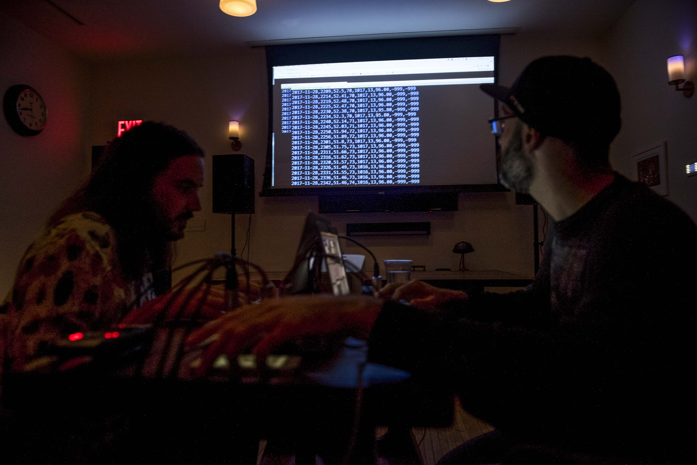
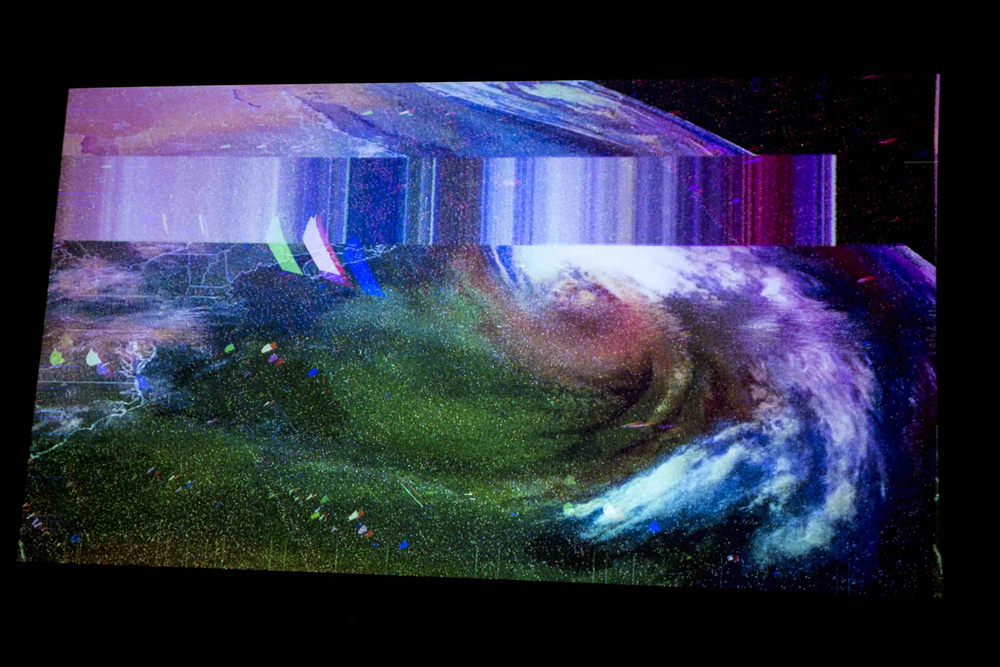
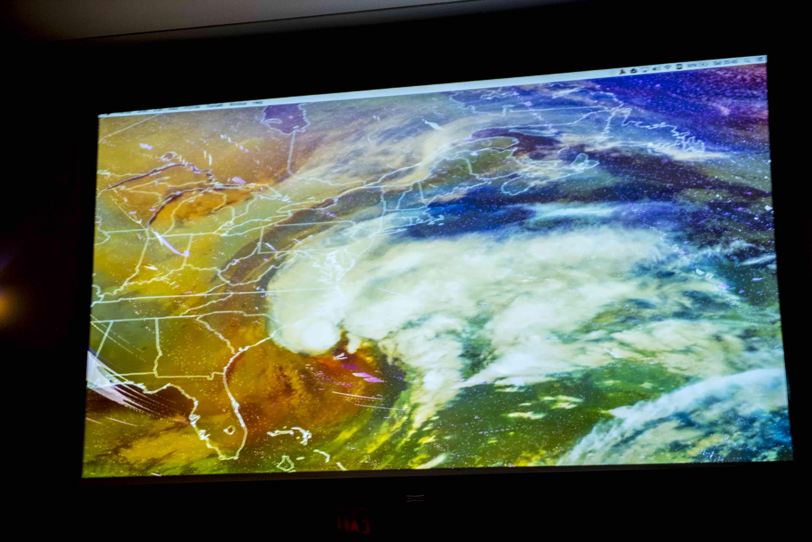

Livecoding A Storm is a collaborative project with atmospheric scientist Campbell Watson of IBM Research to sonify weather data and perform it live. Together we work with code to produce custom audiovisual performance software. We combine atmospheric readings, live data streams, and other inputs to sculpt sonic and visual performances.
In our first performance, we looked at public weather data from Puerto Rico during Hurricane Maria, drawn by the strange occurrence that every major weather station on the island stopped reporting when Maria made landfall. As the pressure dropped and the winds reached hurricane strength, the weather stations went silent. Using an open-source program called Sonic-Pi, we created sounds using the data from these weather stations. Our second performance at Ace Hotel New York used data from a weather station Watson installed on the roof of the hotel.
  